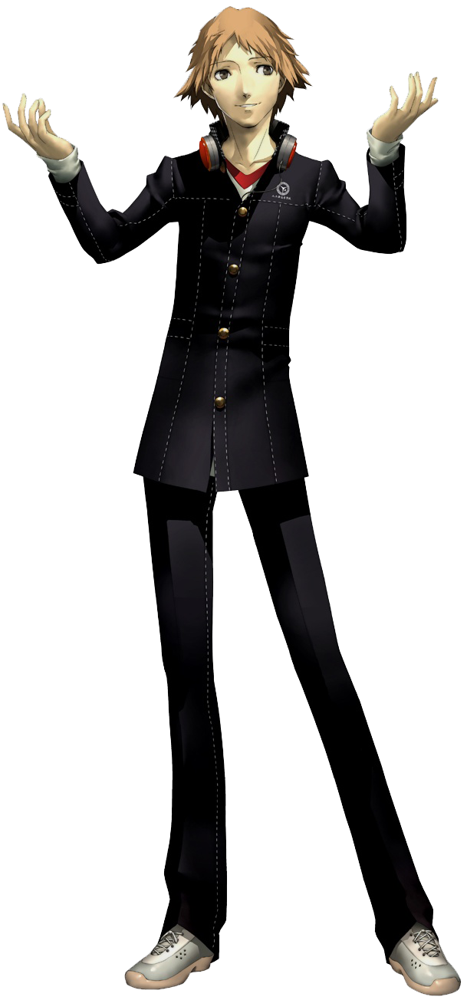
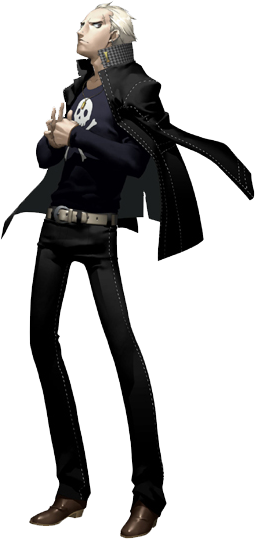
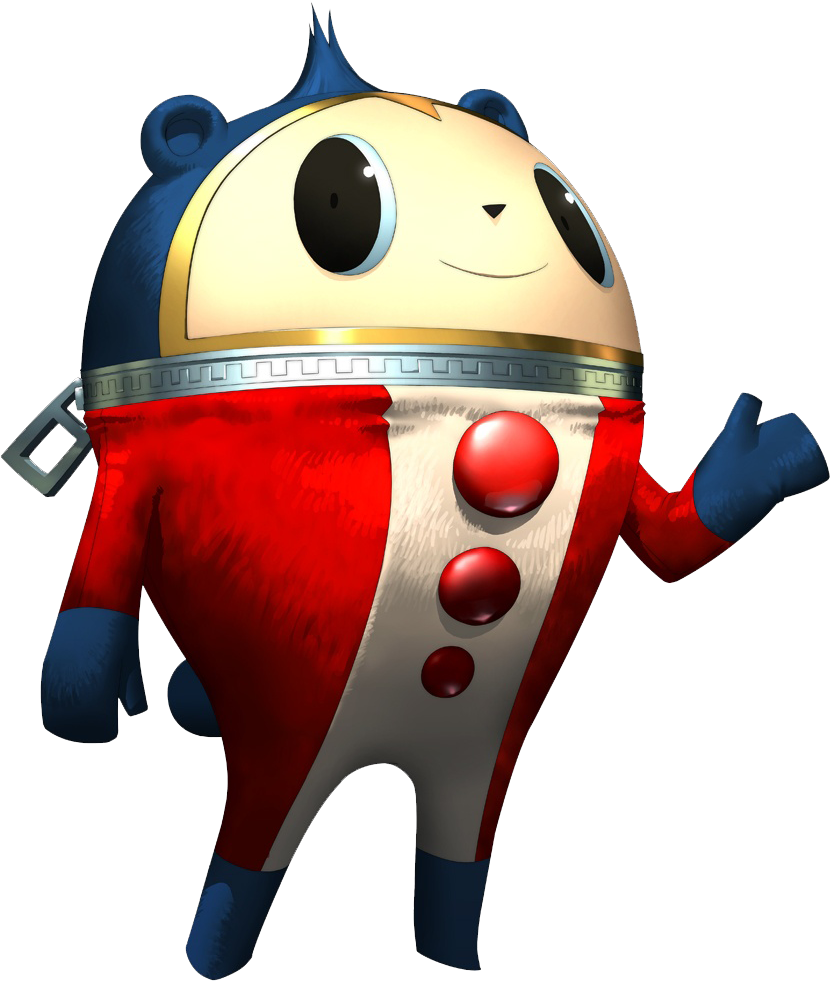

| Persona 4 | |
|---|---|

|
|
| Nome original: | ペルソナ4 |
| Ano de lançamento: | 2008 no Japão e no Ocidente |
| Plataforma(s): | PlayStation 2, PlayStation 3, PlayStation Vita e Windows |
Persona 4
Persona 4 é o quinto jogo da série Persona. O jogo foi desenvolvido pela Atlus para o PlayStation 2 e foi portado para a PlayStation Store do PlayStation 3 como um clássico para download semelhante ao Persona 3 FES, mas apenas na América do Norte e do Sul.
Tal como acontece com Persona 3, o jogo é um RPG baseado em turnos semelhante à maioria dos jogos da franquia Shin Megami Tensei, embora o enredo deste jogo seja bastante único em comparação com outros jogos da franquia e em sua série, pois é baseado em um mistério de assassinato.
| Contents |
|---|
1. Plot
Persona 4 segue um grupo de estudantes do ensino médio lidando com um canal de TV misterioso dedicado a distorcer e exagerar a verdade sobre quem eles são e suas identidades. Uma série de assassinatos bizarros relacionados ao canal de TV começa a sacudir sua outrora pacífica cidade. Eles exploram o mundo misterioso dentro da TV e realizam missões de resgate para salvar as vítimas trazidas para a TV da morte. Apenas olhando além do que está na tela, encontrando e avaliando a verdade entre uma miríade de mentiras é que eles podem esperar encontrar o assassino em série e salvar sua cidade.
2. Personagens






